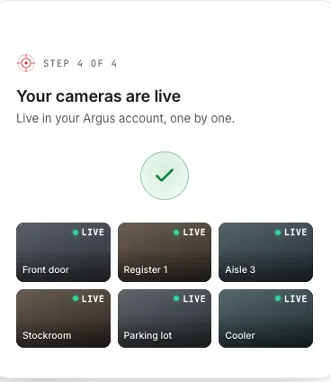

Argus sub-projectEnded 2026
Argus Dashboard
One screen for running a store: loss prevention, stock, money and staff.
- Store portal
- Private repo

A store owner should not need six apps.
A store runs on cameras, a register, invoices, stock, money and staff. Each lives in a different tool. The owner stitches the picture together by hand, usually at the end of a long day.
RION already had a client portal called NEXUS, built as several separate apps. It was not one screen a store manager could glance at.
Turn a multi-app portal into one store screen.
I turned the portal into one screen and renamed it Argus. It kept the same pieces underneath: a store portal, an admin app, a phone app, an ops app, a status page and bulk email.
On top of that I built what a store actually looks at. The demo shows sales today and by hour, transactions, who is on shift, what is running low, and alerts with a dollar amount next to each one.
Later work added camera monitoring, links to the register (POS) and to QuickBooks, invoice emails, faster pages and alerts.

How it works
Every front end talks to one Node and Express API. The API keeps its data in Postgres, signs people in with Clerk and handles billing with Stripe. The AI service sends its alerts to the API as signed messages, so the dashboard can show them with the camera and the store they came from.
One backend for six apps means a fix or a new field shows up everywhere at once.
By the numbers
- About 70%of the code is mine
- 6apps in one: store portal, admin, phone, ops, status, email
A small team wrote the rest of the code.
What I owned
- Wrote about 70% of the code. A small team wrote the rest.
- Turned a multi-app client portal, RION NEXUS, into one store screen and renamed it Argus.
- It included a store portal, admin, phone app, ops app, status page and bulk email.
- Later work: camera monitoring, register (POS) and QuickBooks links, invoice emails, faster pages and alerts.
What I learned
A store dashboard has to answer one question first: is the store okay right now? Everything else sits behind that.
Putting several apps behind one API is cheaper to maintain than it looks, as long as each app keeps a clear job.